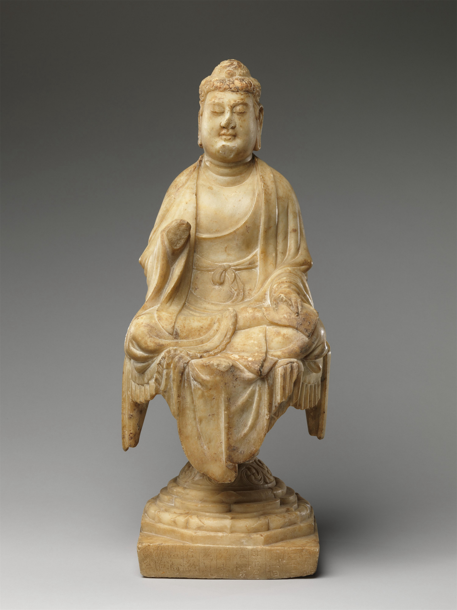

|  mid-8th century. Buddha. Sculpture. Place: The Metropolitan Museum of Art, http://www.metmuseum.org. http://library.artstor.org/asset/SS7731421_7731421_11763482. |
Sculpture mid 8th ceuntry 54.6 cm Height 22.2 cm Width 21.6 cm Depth The Metropolitan Museum of Art |
This Buddha, made of stone, is dated at the Tang Dynasty sits on a pedestal mounted on a pillar. A cloth drapes on the pedestal, and the Buddha sits on top of it. The Buddha has his legs crossed, and has a relaxed stance. His left arm is placed on his left thigh’s lap, and his right hand is held up to the height of his torso. Unfortunately, his right hand has broken off. The robe the Buddha is wearing does not fully cover his chest; his upper torso is exposed. The Buddha’s eyes are closed and he seems to be in a meditative state. His ears are long and he is wearing a headdress. His robe is tied at his waist in a knot. The color of the stone the Buddha is carved into looks somewhat of ivory, with a yellowish white color. Upon closer inspection, though, the imperfections in the rock (marble) are a telltale sign of the actual material of the sculpture figurine. What is rather striking about this particular Buddha is the material that it is made out of. The marble-looking makeup of the sculpture is unlike those of any other sculptures we have seen so far in this presentation. Its unusual component then suggests that the material was of foreign origin, illustrating the cultural openness during the Tang. In addition, the facial features of the sculpture are rather unique, with the Buddha looking rather chubby at the neck. This may reflect the Tang ideal of beauty, when plump figures were regarded as more attractive. |
|---|